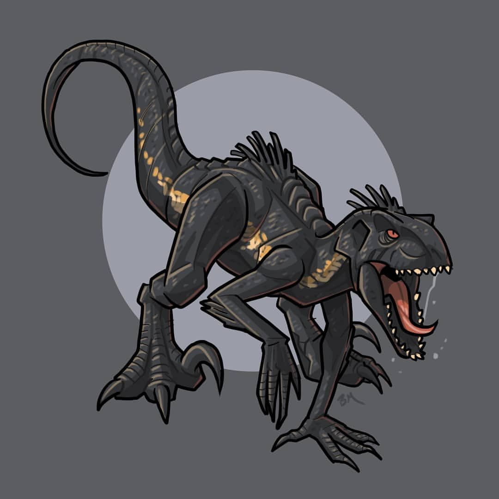

 |
Indoraptor is a hybrid similar to the Indominus rex. It's head resembles a Tyrannosaurus rex with a more pointed snout. Like crocodilians it sports rows of scutes along its back with thinner, smaller scales covering the body. It also bears feathers in the form of quills along the back of its head and dorsum.Speed and VelocityThe Indoraptor can run at high speeds, despite being heavy on the front. It was what works on all four arms when accelerating, similar to a panther. It can run up to 25m per hour. IntelligenceIt's intelligence could be equally or bit higher then Velociraptor or the Indominus rex. He had shown that when it was hit by tranquilizer shots it went down though it was playing with its prey to lure him in to kill AppearanceThe indoraptor is a hybird similar to the indominus rex. It's head resembles a Tyrannosaurus rex with a more pointed snout. Like crocodilians it sports rows of scutes along its back with thinner, smaller scales covering the body. It also bears feathers in the form of quills along the back of its head and dorsum. The overall build is very elongated with a very long tail and neck. Unlike any other Theropod in the franchise, it often runs on all fours |
BehaviorThe Indoraptor was a dangerous, aggressive and hostile dinosaur. Due to its advanced intelligence but lack of socialization it exhibits sociopathic and homicidal tendencies. Though Indoraptor had mean't Maisie for the first time could have try to easily killed her but instead just stroked her hair to understand what she was to him. Even when he seems to be hunting her over her roof and he walked in the bedroom and reach out for her slowly possibly understanding she isn’t human could be the reason why he never meant to hurt her.
abilitiesThe Indoraptor was stated to be the most dangerous creature that ever walked the planet. Granted this was mostly said to show him off to potential buyers but he is still a formidable monster.strength and combatThe Indoraptor is significantly stronger than most medium-size theropods, being able to climb down vertically despite being well over a ton as well as being able to sprint at high speeds while carrying two adult men. It was proven to handle well against female raptor-like Blue as he was able to toss her away from his feet. Dr. Wu stated that the Indoraptor we see (Nicknamed Hot Rod) was a prototype
stamina and durabilityIts durable body is able to take the attacks of Blue and bullets from Owen that had used though it was shown to get back up easily. Whereas a Velociraptor can be felled by a well-placed handgun bullet, the Indoraptor casually shrugged off high powered rifle fire to the point the bullets can be audibly heard dropping out of its hide.senses and EcholocationHe posses a great sense of smell being able to track Maisie in her room, from outside, while raining. With great vision to see in the dark for having night vision. It had the ability to find prey as it was possible to find Owen and the girls behind the glass.
climberUnknown if he able to stick walls but proven to be great climber but possibly from its sharp claws was able to hold on to walls.jaw strengthUnknown if he able to stick walls but proven to be great climber but possibly from its sharp claws was able to hold on to walls. |
|